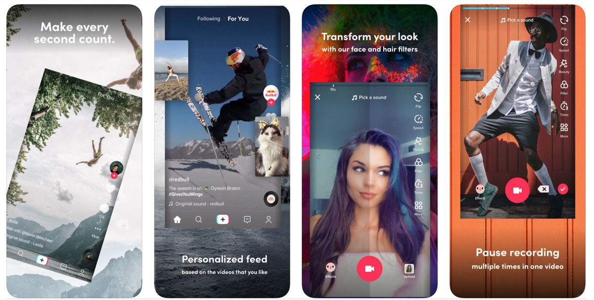

Что такое TikTok
Мобильное приложение «TikTok» позволяет пользователям создавать короткие видео о себе, которые часто содержат музыку в фоновом режиме, могут быть ускорены, замедлены или отредактированы с помощью фильтра. Для создания музыкального клипа с приложением пользователи могут выбрать фоновую музыку из широкого спектра музыкальных жанров, редактировать с помощью фильтра и записать 15-секундное видео с регулировкой скорости перед загрузкой, чтобы поделиться с другими на «TikTok» или других социальных платформах. Они также могут снимать короткие видео с синхронизацией видеоряда относительно популярной песни.
Как пользоваться TikTok новичку
Монетизация TikTok
Монетизация - Издание Bloomberg сообщило в октябре 2018 года, что ByteDance ещё не принесла прибыли, хотя её целевой доход в 2018 году составляет более 7 миллиардов долларов. В течение нескольких месяцев ходили слухи о том, что компания планирует стать публичной[источник не указан 363 дня]. TikTok предлагает покупки монет в приложении, начиная от 100 за 0,99 доллара США и до 10 000 за 99,99 доллара США. Пользователи могут дарить монеты своим любимым создателям, которые в свою очередь могут обменивать их на цифровые подарки[источник не указан 363 дня]. Компания по сбору данных на рынке мобильных приложений Sensor Tower сообщила, что пользователи TikTok во всем мире потратили 3,5 миллиона долларов на покупки внутри приложений в течение октября 2018 года, что почти в четыре раза больше, чем в октябре 2017 года[источник не указан 363 дня]. Digiday сообщил, что агентства также могут начать рекламу на TikTok, учитывая его взрывную популярность. Согласно китайской версии Nanjing Marketing Group, китайская версия TikTok, «Доуинь», предлагает рекламные заставки, которые могут стоить до 1 млн юаней (около 150 000 долларов США) за один день, и рекламные объявления с новостными лентами по 30 юаней (около 4 долларов США) за клик. Такие бренды, как Pizza Hut, проводили такие кампании.
ТОП-10 Youtube каналов
| Чарли Дамелио |
|---|
| Эдисон Рае |
| Зак Кинг |
| Лорен Грей |
| Спенсер Найт |